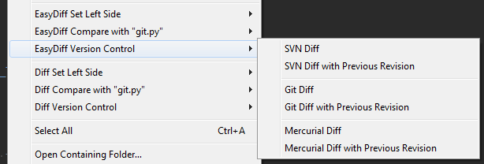

User Guide
Overview
EasyDiff is a diff tool for comparing files in Sublime Text in special diff tabs and/or in your preferred external diff viewer.

- Allows comparing views, selections, multi-selections, and clipboard combinations.
- Can compare the working copy against the base or previous revision of a file in SVN, Git, or Mercurial (requires some setup and configuration).
- Has Dynamic context menus for selecting left side and right side compare. Dynamic menus show what file is on left side (think Beyond Compare context menus).
- View diffs in a view buffer or output panel.
- You can selectively hide version control menus or disable the command completely via the settings file.
- Can open diffs in external diff programs if desired (requires some setup and configuration).
- Show only internal diff options, only external options, or show both depending on your needs and preferences.
Basic Usage
EasyDiff is easy to use. When in a view, simply select the Set Left Side option in the context menus to set what is to be compared on the left. Then select what to compare to via Compare with menu option.
For version control, just select the applicable option when in a view that is version controlled.
General Settings
By default, EasyDiff shows diffs in a separate view. You can display the diff in an output panel if desired using the following setting:
// Use a buffer instead of the output panel "use_buffer": true,
EasyDiff allows for diffing with the clipboard, selections, and even multi-selections. These all can be turned off or on as desired:
// Enable clipboard commands "use_clipboard": true, // Enable selection commands "use_selections": false, // If enabled, this allows for multiple selections. // Each selection is separated with a new line. "multi_select": false,
If you want to compare multiple text blocks against another file or buffer, you can enable multi_select which which combine multiple selections into one buffer that you can compare against another file or buffer.
// If enabled, this allows for multiple selections. // Each selection is separated with a new line. "multi_select": false
Dynamic Menu
EasyDiff creates a dynamic menu in User/EasyDiff/Context.sublime-menu, User/EasyDiff/Tab Context.sublime-menu, and User/EasyDiff/Side Bar.sublime-menu. The content of this context menu changes depending on what is enabled or disabled, hidden or shown, and depending on whether a view, selection, or clipboard has been selected for left side compare. If a view that was previously set has been closed, that view will no longer be reported in the context menu. You can look at the commands in the menu to to see how the commands are constructed if you have a need to bind the commands to shortcuts or to the command palette.
Configuring the Dynamic Menu
EasyDiff can show access commands in the view, tab, and sidebar context menu. If it is desired to exclude or include access diff options in one of these UI elements, you can remove or add the element respectively in the following setting:
// Menus to show (view|tab|sidebar) "menu_types": ["view", "tab", "sidebar"],
If you would like to reduce EasyDiff's footprint at the top level of your menus, or avoid navigating down an extra menu level, you can add or remove the menu type from the submenu option. Place the menu type in the setting's array to nest the commands under a single menu entry, or remove a menu type to have all options accessible at the top level.
// To reduce menu footprint, place diff menus under a parent item "EasyDiff" // (view|tab|sidebar) "submenu": ["view", "tab", "sidebar"],
Version Control Setup
EasyDiff currently supports SVN, Git, and Mercurial. These options should only appear in the context menus if EasyDiff can find the binaries svn, git, and hg respectively.
If one of these options shows up, and you wish to disable them, you can go to your settings file and disable them completely with the following settings:
// Turn off svn completely "svn_disabled": false, // Turn off git completely "git_disabled": false, // Turn off (Mercurial) hg completely "hg_disabled": false,
If you would simply like to hide the options (because you have bound their operations to a shortcut or to the command palette), you can hide the options without disabling them:
// Turn off svn menu access "svn_hide_menu": false, // Turn off git menu access "git_hide_menu": false, // Turn off (Mercurial) hg menu access "hg_hide_menu": false,
If your binaries are not in your system's path, you will need to configure the following settings with the path to your binaries:
// SVN path "svn": "", // Git Path "git": "", // (Mercurial) Hg path "hg": "",
By default, EasyDiff will check if the current view is version controlled by one of your enabled version control binaries when displaying the context menu. This allows the for non-pertinent options to be grayed out. With some version control systems, this can occasionally cause a lag when displaying those options. You can turn off this functionality if it becomes a problem with the following settings:
// Do not perform a version check on files // when evaluating whether version control // commands are enabled. May avoid slowing // down context menu draw in large version // controlled projects. "skip_version_check_on_is_enabled": false,
Using the Quick Panel to Diff
EasyDiff is setup to use menus to initiate diffs, but this is not always aligned with everyone's workflow. For this reason, EasyDiff can also be configured to use quick panel commands.
// Show Diff menu command in the command palette "quick_panel_commands": false, // Enable manual "set left side" and "compare" commands in the panel "quick_panel_left_right_commands": false, // Show commands in the quickpanel that use the last active // tab as the left side. Selection commands will look at selections // of both the last activated and current. "last_activated_commands": true,
To enable quick panel commands, simply enable quick_panel_commands.
By default, EasyDiff is configured to allow comparing either the selection, clipboard, or current view against the last activated view. To enable the set left left/right compare options for greater control, enable quick_panel_left_right_commands. And if you want to get rid of the compare against last active view, just disable last_activated_commands.
Diffing with External Diff Tools
EasyDiff is configured to diff everything internally in a single view. But, it can be configured to diff in external tools instead. This is especially useful if you need to see more than just a diff (such as merging content between the diff).
Configure the external binary setting to point to the desired diff tool binary, and then enable external diff options:
// Show external options (options to send files to external diff tool) "show_external": false, // External diff tool path (absolute) "external_diff": "",
The external option assumes the diff tool takes arguments as such: tool file1 file2. If this is not the case, you will probably have to wrap the command in a shell script that takes the options as described, and call it directly instead. For instance, when I was using DeltaWalker on Mac, I copied their provided work flow configuration to a shell script, and called it directly:
#!/bin/sh DW_PATH=/Applications/DeltaWalker.app/Contents/MacOS java -Ddw.path=$DW_PATH -jar $DW_PATH/dw.jar "$1" "$2" "$3" "$4" "$5" "$6"
Hiding Internal Diffing from Context Menu
EasyDiff allows you to not only enable or disable external diffing, but you can hide internal diffing as well. This option is also useful if you do not use the context menu and have bound the commands to keyboard shortcuts or to the command palette. You can disable the option in the menu, but still access it via the command palette.
The settings are:
// Show internal diff options (EasyDiff in a view or buffer) "show_internal": true, // Show external options (options to send files to external diff tool) "show_external": false,
SubNotify
Occasionally, EasyDiff will about a message in the status bar. You can redirect these messages to your your OS's notification center by using SubNotify. If you have SubNotify installed, just enable the following setting:
// Use SubNotify plugin if installed "use_sub_notify": true